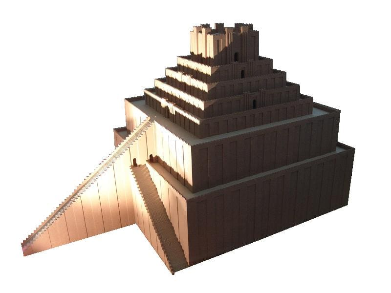

| Gênesis 28:10-22 — Yaaqov foge de Esaú, sonha em Betel, erige pedra & colunas, recebe a promessaGenesis 28:10-22 — Yaaqov flees from Esau, dreams at Beth-el, stone & pillars, promise of blessing | Gênesis 29:1-30:43 — O exílio de Yaaqov na casa de LavanGenesis 29:1-30:43 — Yaaqov's exile in Lavan's house | Gênesis 31:1-32:1 — Yaaqov foge de LavanGenesis 31:1-32:1 — Yaaqov flees from Lavan |
|---|---|---|
| 28:10-11 — Yaaqov foge de Esaú28:10-11 — Yaaqov flees from Esau | 29:1-30 — Lavan engana Yaaqov com Rakhel & Leia29:1-30 — Lavan deceives Yaaqov with Rakhel & Leah | 31:1-16 — O relato do sonho de Yaaqov + recordação da promessa de Betel31:1-16 — Yaaqov's dream report + recall of Beth-el promise & blessing |
| 28:12-15 — Sonho em Betel (Deus aparece "em sonho")28:12-15 — Dream at Beth-el (God appears "in a dream") | 29:31-30:24 — As esposas rivais & os filhos de Yaaqov29:31-30:24 — Yaaqov's rival wives & sons | 31:17-42 — Lavan persegue & acusa Yaaqov31:17-42 — Lavan chases & accuses Yaaqov |
| 28:16-22 — Pedra & colunas + promessa de bênção28:16-22 — Stone & pillars + promise of blessing | 30:25-43 — Yaaqov engana Lavan com seus rebanhos30:25-43 — Yaaqov deceives Lavan with his flocks | 31:43-32:1 — Yaaqov & Lavan fazem paz por aliança nos pilares de pedra31:43-32:1 — Yaaqov & Lavan make peace through covenant at stone pillars |
| The chart above is adapted from Andrew Teeter's "Genesis Class Notes" and from the principles in his essay, "Biblical Symmetry and Its Modern Detractors," a paper delivered at the 2019 International Organization for the Study of the Old Testament. Translation and Literary Design by Tim Mackie for BibleProject Classroom: Jacob (2021). | ||
Esta seção forma o centro da narrativa de Yaaqov, e relata seu exílio de 20 anos em Kharan, o lugar de onde seu avô Abraão migrou para Canaã. Aqui, o engano de Yaaqov é devolvido por seu tio Lavan, e o que ele fez a seu pai e irmão agora é feito a ele. Os enganos e contra-enganos escalam, e a única coisa que põe fim a esse festival de engano é uma aliança de paz entre irmãos. As três partes desta seção têm um desenho simétrico geral.This section makes up the center of the Yaaqov narrative, and it recounts his 20-year exile in Kharan, the place from which his grandfather Abraham migrated to Canaan. Here, Yaaqov's deception is turned back upon him by his uncle Lavan, and what he did to his father and brother is now done to him. The deceptions and counter-deceptions escalate, and the only thing that brings this deception-fest to a halt is a covenant of peace between brothers. The three parts of this section have an overall symmetrical design.
10 E Yaaqov saiu de Berseba e foi para Harã. 11 E encontrou aquele lugar, e ali passou a noite, pois o sol já se havia posto; e tomou das pedras (אבן) do lugar, e as pôs como travesseiro (מראשתיו), e deitou-se naquele lugar. 12 E teve um sonho, e eis uma rampa (סלם) posta sobre a terra, cujo topo (ראש) chegava aos céus; e eis que mensageiros de Elohim subiam e desciam por ela. 13 E eis que Yahweh se pôs (נצב) sobre ela e disse: "Eu mesmo (אני) sou Yahweh, o Elohim de Abraão teu pai e o Elohim de Yitskhaq teu pai; a terra em que estás deitado, a ti a darei e à tua semente. 14 E tua semente será como o pó da terra, e dilatar-se-á para o ocidente, e para o oriente, e para o norte, e para o sul; e em ti serão benditas todas as famílias da terra, e na tua semente. 15 E eis que eu mesmo (אנכי) estou contigo, e te guardarei por onde quer que fores, e te farei voltar a esta terra; não te deixarei até que faça o que te tenho falado." 16 E Yaaqov despertou do seu sono, e disse: "Certamente Yahweh está neste lugar, e eu não o sabia." 17 E temeu, e disse: "Quão temível é este lugar! Este não é senão a casa de Elohim [= 'Beth-Elohim'], e esta é a porta (שער) dos céus." 18 E Yaaqov levantou-se pela manhã, e tomou a pedra (אבן) que pusera por travesseiro, e a erigiu como coluna (מצבה), e derramou azeite sobre o seu topo (ראשה). 19 E chamou o nome daquele lugar "Beth-El" [= "Casa de El"]; Luz ("Árvore de Amendoeira") era o nome da cidade antes.10 And Yaaqov went out from Beer-Sheva and he went to Haran. 11 And he encountered the place, and he stayed the night there, for the sun had gone down, and he took from the stones (אבן) of the place, and he set his head-rest (מראשתיו), and he laid down in that place. 12 And he had a dream, and behold, a ramp was set (מצב) on the land, and its head (ראש) was in the skies, and behold, messengers of Elohim were going up and going down upon it. 13 And behold, Yahweh stood (נצב) upon it and said, "I myself (אני) am Yahweh the Elohim of Abraham your father and the Elohim of Yitskhaq your father; the land that you are lying on, to you I will give it, and to your seed. 14 And your seed will be like the dust of the land, and you will break out to the west, and to the east, and to the north, and to the south; and in you all the families of the ground will find blessing, and in your seed." 15 And behold, I myself (אנכי) am with you, and I will keep you everywhere you go, and I will return you back to this ground, indeed, I will not abandon you until I do what I have spoken to you." 16 And Yaaqov woke up from his sleep, and he said, "Surely Yahweh is in this place, and I did not know it." 17 And Yaaqov was afraid, and he said, "How fearful is this place, this is none other than the house of Elohim [= 'Beth-Elohim'], and this is the gate (שער) of the skies." 18 And Yaaqov got up in the morning, and he took the stone (אבן) which he set for a head-rest (מראשתיו), and he set it as a pillar (מצבה), and he poured olive oil upon its head (ראשה). 19 and he called the name of that place, "Beth-El" [= "House of El"]; Now, Luz ("Almond-tree") was the name of the city at its beginning (ראשנה).
Ao deixar a terra prometida à semente de Abraão, Yaaqov encontra mensageiros divinos indo e vindo entre os céus e a terra. Ele depara com um portal, por assim dizer, entre Céu e Terra. Este é um recall não muito sutil dos querubins que Yahweh postou à entrada do Éden quando exilou os humanos. Há outro paralelo importante entre o exílio de Adão e Eva e Yaaqov: no meio de uma partida trágica, Deus promete que uma semente futura restaurará a bênção do Éden ao mundo.As Yaaqov leaves the land promised to Abraham's seed, he encounters divine messengers coming and going between the skies and the land. He happens upon a portal, as it were, between Heaven and Earth. This is a not-very-subtle recall of the cherubim that Yahweh posted at the entrance of Eden when he exiled the humans. There is another important parallel between the exile of Adam and Eve and Yaaqov: In the midst of a tragic departure, God promises that a future seed will restore the Eden blessing to the world.
22 E Yahweh Elohim disse: “Eis que o humano se tornou como um de nós, conhecendo o bem e o mal; e agora, para que não estenda a sua mão, e tome também da árvore da vida, e coma, e viva para sempre...” 23 E Yahweh Elohim o enviou para fora do jardim, para lavrar a terra de onde foi tomado. 24 E ele expulsou o humano, e fez habitar ao leste do jardim do Éden querubins e a chama da espada que giral, para guardar o caminho da árvore da vida.22 And Yahweh Elohim said, “Look, the human has become like one of us, knowing good and bad, and now so that he won’t send out his hand and take also from the tree of life, and eat and live forever ...” 23 and Yahweh Elohim sent him out from the garden to work the ground from which he was taken. 24 And he banished the human and he made to dwell at the east of the garden of Eden cherubim and the flame of the whirling sword to guard the way to the tree of life.
A força dessa analogia é reforçada pelo fato de que, quando Yaaqov retorna do seu exílio na casa de Lavan e atravessa de volta para a terra, ele tem outro encontro com mensageiros divinos.The strength of this analogy is bolstered by the fact that when Yaaqov returns from his exile in Lavan’s house and crosses back into the land, he has another encounter with divine messengers.
| Gênesis 28:10-22Genesis 28:10-22 | Gênesis 29-31Genesis 29-31 | Gênesis 32:2-3Genesis 32:2-3 |
|---|---|---|
| Yaaqov encontra “mensageiros divinos” (מלאכי אלהים) na fronteira da terra. “E ele disse: ‘Esta é a casa de El!’” “E chamou o nome do lugar, ‘Casa de El.’”Yaaqov meets “divine messengers” (מלאכי אלהים) at the border of the land. “And he said, ‘This is the house of El!’” “And he called the name of the place, ‘House of El.’” | O exílio de Yaaqov na casa de LavanYaaqov’s exile in Lavan’s house | Yaaqov encontra “mensageiros divinos” (מלאכי אלהים) na fronteira da terra. “E ele disse: ‘Este é o acampamento de Elohim’” “E chamou o nome do lugar ‘Dois-Acampamentos’”Yaaqov meets “divine messengers” (מלאכי אלהים) at the border of the land. “And he said, ‘This is the camp of Elohim’” “And he called the name of the place ‘Two-Camps’” |
| Divine Messengers at the Border of the Land. Created by Tim Mackie for BibleProject Classroom: Jacob (2021). | ||
| A Maldição de Deus sobre a SerpenteGod’s Curse on the Snake | A Bênção de Deus sobre Yaaqov semelhante à serpenteGod’s Blessing on the Snake-like Yaaqov |
|---|---|
| Gn 3:14-15 E Yahweh Elohim disse à serpente: “Porque fizeste isto, és maldita mais do que todo animal e mais do que todo ser vivente do campo;”Gen. 3:14-15 And Yahweh Elohim said to the snake, “Because you have done this thing, you are cursed more than every beast and more than every living creature of the field;” | Gn 28:13-14 ... “Eu sou Yahweh, o Elohim de Avraham teu pai, e o Elohim de Yitskhaq teu pai; a terra sobre a qual estás deitado, a ti a darei, e a tua semente.”Gen. 28:13-14 ... “I am Yahweh, the Elohim of Avraham your father, and the Elohim of Yitschaq your father; the land that you are lying on, to you I will give it, and to your seed.” |
| Blessing the Snake-like Yaaqov. Created by Tim Mackie for BibleProject Classroom: Jacob (2021). | |
Contudo, observe o contraste: Yaaqov é assemelhado à serpente enganosa (ambos são golpeadores de calcanhar), mas em vez de receber uma maldição, Deus lhe dá uma bênção. Em vez de uma sentença de morte, ele recebe uma promessa de vida. A imagem do sonho de Yaaqov revela um aspecto central do retrato da realidade na Bíblia: Céu e Terra são reinos distintos, mas não totalmente separados. Pelo contrário, foram feitos um para o outro, e se intersectam e se sobrepõem de modos que os humanos apenas vagamente percebem.However, notice the contrast: Yaaqov is likened to the deceitful snake (both are heel-strikers), but instead of receiving a curse, God gives him a blessing. Instead of a sentence of death, he is given a promise of life. The imagery of Yaaqov's dream reveals a core aspect of the Bible's portrait of reality: Heaven and Earth are distinct realms, but they're not wholly separate. Rather, they are made for one another, and they intersect and overlap in ways that humans only dimly perceive. Eden is the foundational biblical image of a realm where Heaven and Earth are one. But this story takes us one step further, and it shows us how Heaven and Earth can overlap when a person's consciousness is heightened to awareness of this overlap.
O fato de que Yaaqov está dormindo e sonhando, e é isso o que o torna capaz de perceber a presença do Céu ligada à Terra, é da maior importância. Nossos estados normais, socializados e conscientes apenas nos tornam conscientes de alguns aspectos da realidade. O sonho também é uma imagem do Éden, onde o primeiro “sonho” é aludido quando Elohim faz cair um profundo sono sobre o humano para que ele possa ser dividido em dois (ver Gn 2:18-25).The fact that Yaaqov is asleep and dreaming, and this is what makes him able to perceive Heaven’s presence linked to Earth, is of greatest significance. Our normal, socialized, conscious states only make us aware of some aspects of reality. The dream is also an Eden image, where the first “dream” is alluded to when Elohim causes a deep sleep to fall upon the human so that he can be divided into two (see Gen. 2:18-25).
12 E teve um sonho, e eis uma rampa (סלם) posta sobre a terra, cujo topo (ראש) chegava aos céus; e eis que mensageiros de Elohim subiam e desciam por ela.12 And he had a dream and behold, a ramp was set on the land, and its head was in the skies and behold, messengers of Elohim were going up and going down upon it.
A palavra hebraica para “rampa”, ou possivelmente “escada”, é sullam (סלם), e aparece apenas aqui em toda a literatura hebraica antiga. Está relacionada à palavra simmiltu no acadiano, uma antiga língua semítica cognata do hebraico, que significa “rampa de degraus” e poderia referir-se às altas escadarias ascendentes que conduzem ao topo dos zigurates mesopotâmicos, templos sagrados que conectavam o Céu e a Terra com um altar no topo. O grande zigurate Etemenanki na Babilônia, e o templo Esagila que o acompanhava, foi uma das maiores estruturas de templo do mundo antigo. Foi construído, remodelado e reconstruído várias vezes dentro dos 700 anos entre o século XIV e o século VII a.E.C. “Etemenanki” é sumério para “Torre da Fundação do Céu e da Terra”. Suas origens no século XIV são mencionadas no famoso épico babilônico da criação Enuma Elish, que relata a ascensão de Marduk ao poder quando o império babilônico antigo passou a dominar a Mesopotâmia nos anos 1200 a.E.C. O ponto dessa imagem é que Yaaqov está vendo a realidade à qual os templos antigos apontavam: a interseção do Céu e da Terra, dos reinos divino e humano em um só lugar.The Hebrew word for “ramp,” or possibly “stairway,” is sullam (סלם), and it appears only here in all of ancient Hebrew literature. It is related to the word simmiltu in Akkadian, a ancient cognate Semitic language related to Hebrew, which means “stepped ramp” and could refer to the tall, ascending stairways that lead to the top of Mesopotamian ziggurats, sacred temples that connected Heaven and Earth with an altar on top. The great Etemenanki ziggurat in Babylon, and the accompanying Esagila temple, was one of the largest temple structures in the ancient world. It was built, remodeled, and rebuilt several times within the 700 years between the 14th and 7th century B.C.E. “Etemenanki” is Sumerian for “Tower of the Foundation of Heaven and Earth.” Its origins in the 14th century are mentioned in the famous Babylonian epic of creation Enuma Elish, which tells of Marduk’s rise to power as the old Babylonian empire came to dominate Mesopotamia in the 1200s B.C.E. The point of this image is that Yaaqov is seeing the reality to which ancient temples pointed: the intersection of Heaven and Earth, of the divine and human realms in one place.
| Gênesis 11Genesis 11 | Gênesis 27-29Genesis 27-29 |
|---|---|
| Gn 11:1 Ora, toda a terra era de uma só língua e de uma só fala.Gen. 11:1 Now the whole land was one language and one in words. | Gn 29:1 E Yaaqov levantou os pés, e foi para a terra dos filhos do Oriente.Gen. 29:1 And Yaaqov lifted his feet, and he went to the land of the sons of the East. |
| Gn 11:2 E aconteceu que, indo para o leste, acharam uma planície na terra de Sinar e ali habitaram.Gen. 11:2 And it came about as they journeyed east that they found a plain in the land of Shinar and they settled there. | Gn 28:17 Este não é outro senão a casa de Elohim, e esta é a porta dos céus.Gen. 28:17 This is none other than the house of Elohim, and this is the gate of the skies. |
| Gn 11:3 E disseram um ao outro: “Vinde, façamos tijolos e queimemo-los bem.” E usaram tijolo por pedra, e betume por argamassa.Gen. 11:3 And they said each to his neighbor, “Come, let us brick bricks and burn them as burnt.” And they used brick for stone, and they used tar for mortar. | Gn 28:18-19 E Yaaqov se levantou de manhã, tomou a pedra que tinha posto para o seu travesseiro, e a pôs como pedra de pé, e derramou azeite sobre a sua cabeça, e chamou o nome daquele lugar Beth-El (= “Casa de Elohim”).Gen. 28:18-19 And Yaaqov got up in the morning, and he took the stone which he placed for a head-space, and he placed it as a standing-stone, and poured olive oil upon its head, and he called the name of that place Beth-El (= “House of Elohim”). |
| Gn 11:4 E disseram: “Vinde, edifiquemos para nós uma cidade, e uma torre cujo topo chegue aos céus...”Gen. 11:4 And they said, “Come, let us build for ourselves a city, and a tower whose head will be in the skies...” | |
| Journey East and a Tower to the Skies. Created by Tim Mackie for BibleProject Classroom: Jacob (2021). | |
O exílio de Yaaqov também é posto em analogia aos filhos de Noé que vão para o leste e tentam construir sua própria montanha cósmica que alcança os céus. Há um contraste importante entre a experiência de Yaaqov e os construtores babilônicos. Os babilônicos tentam ativamente construir seu caminho de volta aos céus. Yaaqov é um recipiente passivo da visão. Sua inatividade enfatiza que a conexão entre Céu e Terra não pode ser alcançada por humanos, mas apenas recebida como dom.Yaaqov's exile is also set on analogy to the sons of Noah who go east and attempt to build their own cosmic mountain that reaches to the skies. There is an important contrast here between Yaaqov's experience and the Babylonian builders. The Babylonians are actively attempting to build their way back up to the heavens. Yaaqov is a passive recipient of the vision. His inactivity emphasizes that the connection between Heaven and Earth cannot be achieved by humans, but only received as a gift.
A palavra hebraica para Babilônia é bavel (בבל), que é uma grafia hebraica da palavra acadiana bab-il, que significa “portão dos deuses”. Observe que isto é precisamente o que Yaaqov chama a rampa-escada que vê em sua visão.The Hebrew word for Babylon is bavel (בבל), which is a Hebrew spelling of the Akkadian word bab-il, which means “gate of the gods.” Notice that this is precisely what Yaaqov calls the stair-ramp he sees in his vision.
Dentro do desenho composicional de Gênesis 1-11, a história da construção de Babilônia forma uma correspondência de importância crucial com a história do Éden. O fato de que ambas as histórias estão sendo hiperligadas dentro desta história sobre Yaaqov mostra a consciência do autor de sua ligação.Within the compositional design of Genesis 1-11, the story of the building of Babylon forms a crucially important match to the story of Eden. The fact that both stories are being hyperlinked to within this story about Yaaqov shows the author’s awareness of their linkage.
| Gênesis 1:1-2:3Genesis 1:1-2:3 | Gênesis 2:4-3:24Genesis 2:4-3:24 | Gênesis 4-5Genesis 4-5 |
|---|---|---|
| • Criação a partir das águas• Creation out of the waters | • Éden = montanha cósmica onde céu e terra são um • Bênção, falha e maldição no jardim • Exílio para o leste do jardim• Eden = cosmic mountain where heaven and earth are one • Blessing, failure, and curse in the garden • Exile to the east of the garden | • A violência de Caim e ulterior exílio do Éden • Ele edifica uma cidade para o seu próprio nome, e seu clamor sobe a Deus• Cain’s violence and further exile from Eden • He builds a city for his own family name, and its outcry reaches up to God |
| Gn 6:1-9:17 • Des-criação e re-criação pelas águasGen. 6:1-9:17 • De-creation and re-creation by the waters | Gn 9:18-27 • Ararat = montanha cósmica onde Céu e Terra se reconciliam • Bênção, falha e maldição na vinha-jardim • Exílio para o leste do ÉdenGen. 9:18-27 • Ararat = cosmic mountain where Heaven and Earth are reconciled • Blessing, failure, and curse in the vineyard garden • Exile to the east of Eden | Gn 9:28-11:9 • Os descendentes de Cão são ulteriormente exilados do Éden • A edificação da cidade da Babilônia para o seu próprio nome, e sua arrogância sobe a DeusGen. 9:28-11:9 • Ham’s descendants are further exiled from Eden • The building of the city of Babylon for their own name, and its arrogance reaches up to God |
| Gn 25:19-34 • Criação dos filhos de YitskhaqGen. 25:19-34 • Creation of Yitskhaq’s sons out | Gn 26-28:9 • Canaã = Um novo Éden onde...Gen. 26-28:9 • Canaan = A new Eden where | Gn 28:10-22 • Yaaqov é ulteriormente exilado de...Gen. 28:10-22 • Yaaqov is further exiled from |
| Eden, Babylon, and Bethel. Created by Tim Mackie for BibleProject Classroom: Jacob (2021). | ||
As palavras de Deus a Yaaqov misturam frases dos discursos de bênção de Deus tanto a Abraão quanto a Yitskhaq. Deus promete a Yaaqov que todas as famílias da terra acharão bênção nele e em sua semente — a mesma promessa feita a Abraão e reiterada a Yitskhaq.God's words to Yaaqov blend together phrases from God's blessing speeches to both Abraham and Yitskhaq. God promises Yaaqov that all the families of the ground will find blessing through him and through his seed — the same promise made to Abraham and reiterated to Yitskhaq.
| A Promessa de Deus a Yaaqov: Gênesis 28:13-15God’s Promise to Yaaqov: Genesis 28:13-15 | As Promessas de Deus a Yitskhaq e AbraãoGod’s Promises to Yitskhaq and Abraham |
|---|---|
| Eu sou Yahweh, o Elohim de Avraham teu pai, e o Elohim de Yitskhaq; a terra sobre a qual estás deitado, a ti a darei e à tua semente. Tua semente será também como o pó da terra, e estender-te-ás para o ocidente e para o oriente e para o norte e para o sul.I am Yahweh, the Elohim of Avraham your father, and the Elohim of Yitskhaq; the land on which you lie, I will give it to you and to your seed. Your seed will also be like the dust of the earth, and you will spread out to the west and to the east and to the north and to the south. | Gn 26:24 Eu sou o Elohim de Avraham teu pai.Gen. 26:24 I am the God of Abraham your father. Gn 13:14-17 ¹⁴ Agora levanta os olhos e olha do lugar em que estás, para o norte e para o sul, para o oriente e para o ocidente; ¹⁵ pois toda a terra que vês, a ti a darei e à tua semente para sempre. ¹⁶ Farei tua semente como o pó da terra, de sorte que, se alguém pode contar o pó da terra, também a tua semente poderá ser contada. ¹⁷ Levanta-te, percorre a terra no seu comprimento e largura; pois a ti a darei.Gen. 13:14-17 ¹⁴ Now lift up your eyes and look from the place where you are, northward and southward and eastward and westward; ¹⁵ for all the land which you see, I will give it to you and to your seed forever. ¹⁶ I will make your seed as the dust of the earth, so that if anyone can number the dust of the earth, then your seed can also be numbered. ¹⁷ Arise, walk about the land through its length and breadth; for I will give it to you. |
| God’s Promises to Yaaqov, Abraham, and Yitskhaq. Created by Tim Mackie for BibleProject Classroom: Jacob (2021). | |
20 E Yaaqov fez um voto (נדר), dizendo: "SE Elohim for comigo, e me guardar neste caminho que vou, e SE me der pão para comer e roupa para vestir, 21 e SE eu voltar à casa de meu pai, ENTÃO Yahweh será meu Elohim, 22 e ENTÃO esta pedra que pus como coluna será casa de Elohim, e tudo o que me deres, certamente dizimarei (עשר אעשרנו) um décimo disso para ti."20 And Yaaqov vowed a vow (וידר…נדר), saying: "If Elohim will be with me, and keep me on this path which I am going, and if he will give me bread to eat and clothing to wear, 21 and if I return to the house of my father, then Yahweh will be my Elohim, 22 and then the stone (אבן) which I placed as a pillar (מצבה), it will be a house of Elohim [= 'Beth-Elohim'], and then everything which you will give me, I will surely tithe a tenth (עשר אעשרנו) of it to you."
Yaaqov toma as promessas de Deus e as transforma em pontos de negociação.Yaaqov takes God’s promises and turns them into negotiating points.
Yaaqov toma a promessa de proteção e bênção de Deus e a transforma em uma obrigação transacional da parte de Deus. Yahweh oferece dar a bênção dos antepassados de Yaaqov a ele como dom, mas Yaaqov a transforma em condição: Yahweh pode ser seu Deus se o proteger. Observe que Yaaqov reduz o escopo cósmico das promessas divinas aos confins de sua própria sobrevivência pessoal ("pão e roupa") e retorno à terra. A promessa de Deus a Yaaqov é sobre sua semente, a terra, a fecundidade e a bênção para as nações. A resposta de Yaaqov apenas repete o que é importante para sua sobrevivência pessoal (note que "pão e roupa" é exatamente o que Yaaqov usou para enganar seu irmão e pai). "O trapaceiro Jacó agora está ligado a este Deus que preside todo o trapacear ainda por vir na narrativa. Deus se comprometeu com Jacó desde o oráculo de 25:23. Mas só agora Jacó também está ligado. A resposta de Jacó soa como um ato genuíno de fé. Mas Jacó será Jacó. Mesmo neste momento solene, ele ainda soa como um caçador de pechinchas. Ele ainda acrescenta um 'se' (v. 20)." — Brueggemann, Walter (1982). Gênesis: Interpretação.Yaaqov takes God's promise of protection and blessing and turns it into a transactional obligation on God's part. Yahweh offers to give the blessing of Yaaqov's ancestors to him as a gift, but Yaaqov turns it into a condition: Yahweh can be his God if he protects him. Notice that Yaaqov reduces the cosmic scope of the divine promises down to the confines of his own personal survival ("food and clothing") and return to the land. God's promise to Yaaqov is about his seed, the land, fruitfulness, and blessing for the nations. Yaaqov's response only repeats what is important for his personal survival (note that "food and clothing" is exactly what Yaaqov used to deceive his brother and father). "Jacob the trickster is now bound to this God who presides over all the trickery yet to come in the narrative. God has been committed to Jacob since the oracle of 25:23. But only now is Jacob also bound. Jacob's response strikes one as a genuine act of faith. But Jacob will be Jacob. Even in this solemn moment, he still sounds like a bargain-hunter. He still adds an 'if' (v. 20)." — Brueggemann, Walter (1982). Genesis: Interpretation.
Brueggemann, Walter (1982). Gênesis: Interpretação, um Comentário Bíblico para Ensino e Pregação. Westminster John Knox Press. 248.Brueggemann, Walter (1982). Genesis: Interpretation, A Bible Commentary for Teaching and Preaching. Westminster John Knox Press. 248.
Depois de negociar com a promessa de Deus, Yaaqov passa a prometer construir um templo para Deus — algo que Deus não pediu. Isto é semelhante à oferta de Davi de construir um templo para Deus quando Deus nunca pediu tal coisa.After negotiating with God’s promise, Yaaqov goes on to promise to build God a temple—something that God has not asked for. This is similar to David’s offer to build a temple for God when God never asked for such a thing.
| VersoVerse | 2 Samuel 7:1-7 (NASB)2 Samuel 7:1-7 (NASB) |
|---|---|
| 11 | Ora, aconteceu que, quando o rei habitava em sua casa, e o SENHOR lhe dera descanso de todos os seus inimigos ao redor, disse o rei a Natã, o profeta: “Olha, agora habito em casa de cedro, mas a arca de Deus habita no meio de cortinas de tenda.”Now it came about when the king lived in his house, and the LORD had given him rest on every side from all his enemies, that the king said to Nathan the prophet, “See now, I dwell in a house of cedar, but the ark of God dwells within tent curtains.” |
| 22 | E Natã disse ao rei: “Vai, faze tudo o que está no teu coração, porque o SENHOR é contigo.”Nathan said to the king, “Go, do all that is in your mind, for the LORD is with you.” |
| 33 | Mas na mesma noite, veio a palavra do SENHOR a Natã, dizendo:But in the same night, the word of the LORD came to Nathan, saying, |
| 44 | “Vai e dize ao meu servo Davi: ‘Assim diz o SENHOR: Tu és quem há de edificar-me uma casa para eu habitar?“Go and say to my servant David, ‘Thus says the LORD, “Are you the one who should build me a house to dwell in? |
| 55 | Pois não habitei em casa desde o dia em que fiz subir os filhos de Israel do Egito até hoje, mas tenho andado de tenda em tenda, e de tabernáculo em tabernáculo.For I have not dwelt in a house since the day I brought up the sons of Israel from Egypt, even to this day; but I have been moving about in a tent, even in a tabernacle. |
| 66 | Por onde quer que andei com todos os filhos de Israel, porventura falei alguma palavra a alguma das tribos de Israel, a quem mandei apascentar o meu povo de Israel, dizendo: Por que não me edificastes uma casa de cedro?’”’”Wherever I have gone with all the sons of Israel, did I speak a word with one of the tribes of Israel, which I commanded to shepherd my people Israel, saying, ‘Why have you not built me a house of cedar?’’” |
| David's Offer to Build a Temple. Created by Tim Mackie for BibleProject Classroom: Jacob (2021). | |
Gênesis 28:10-22 é a história fundadora do templo em Betel, que mais tarde se tornaria um centro idólatra de adoração para as tribos alienadas de Israel e eventualmente levaria à destruição e exílio de Israel (1 Reis 12:28-32; Amós 3:14, 4:4-5, 5:5-6). Esta história é aludida em um momento importante no Evangelho de João, onde Jesus está reunindo um Israel simbolicamente restaurado. João 1:44-51 retrata Jesus como Yahweh, convocando um Yaaqov/Israel moralmente transformado (Natalael, "israelita em quem não há dolo") a segui-lo. Os hiperlinks que João ativa mostram como a história de Yaaqov foi entendida em relação aos temas maiores sobre Yaaqov em ação no Tanak.Genesis 28:10-22 is the founding story of the temple at Bethel, which will later become an idolatrous center of worship for the estranged tribes of Israel and eventually lead to Israel's destruction and exile (1 Kings 12:28-32; Amos 3:14, 4:4-5, 5:5-6). This story is alluded to in an important moment in the Gospel of John, where Jesus is assembling a symbolic restored Israel. John 1:44-51 portrays Jesus as Yahweh, summoning a morally transformed (= new covenant) Yaaqov/Israel (Nathanael, "an Israelite indeed, in whom there is no deceit") to follow him. The hyperlinks that John is activating show how the Yaaqov story was understood in relationship to the larger themes about Yaaqov at work in the TaNaK.
| 1 Reis 12:28-32 (NASB)1 Kings 12:28-32 (NASB) |
|---|
| 28 Então o rei tomou conselho, e fez dois bezerros de ouro, e disse-lhes: “Demais é para vós subir a Jerusalém; eis aqui estão os teus deuses, ó Israel, que te fizeram subir da terra do Egito.” 29 E pôs um em Betel, e o outro pôs em Dã. 30 E esta coisa se tornou em pecado, porque o povo ia adorar perante um até Dã. 31 E ele fez casas nos lugares altos, e fez sacerdotes dentre todo o povo, que não eram dos filhos de Levi. 32 Jeroboão instituiu uma festa no oitavo mês, no décimo quinto dia do mês, à semelhança da festa que havia em Judá, e subiu ao altar; assim fez em Betel, sacrificando aos bezerros que tinha feito; e estabeleceu em Betel os sacerdotes dos lugares altos que tinha feito.28 So the king consulted, and made two golden calves, and he said to them, “It is too much for you to go up to Jerusalem; behold your gods, O Israel, that brought you up from the land of Egypt.” 29 He set one in Bethel, and the other he put in Dan. 30 Now this thing became a sin, for the people went to worship before the one as far as Dan. 31 Now he made houses on high places, and made priests from among all the people who were not of the sons of Levi. 32 Jeroboam instituted a feast in the eighth month on the fifteenth day of the month, like the feast which is in Judah, and he went up to the altar; thus he did in Bethel, sacrificing to the calves which he had made. And he stationed in Bethel the priests of the high places which he had made. |
| Idolatrous Worship at Bethel. Created by Tim Mackie for BibleProject Classroom: Jacob (2021). |
| Amós 3:14 (NASB)Amos 3:14 (NASB) |
|---|
| Pois no dia em que eu punir as transgressões de Israel, também punirei os altares de Betel; e serão cortados os chifres do altar, e cairão por terra.For on the day that I punish Israel’s transgressions, I will also punish the altars of Bethel; the horns of the altar will be cut off and they will fall to the ground. |
| Judgment on Bethel. Created by Tim Mackie for BibleProject Classroom: Jacob (2021). |
| Amós 4:4-5 (NVI)Amos 4:4-5 (NIV) |
|---|
| “Ide a Betel e pecai; ide a Gilgal e pecai ainda mais. Trazei os vossos sacrifícios cada manhã, os vossos dízimos de três em três anos; queimai pão levedado como oferta de ação de graças, e proclamai ofertas voluntárias—gabaí-vos delas, ó israelitas, pois isto é o que amais fazer,” declara o Soberano SENHOR.“Go to Bethel and sin; go to Gilgal and sin yet more. Bring your sacrifices every morning, your tithes every three years. Burn leavened bread as a thank offering and brag about your freewill offerings—boast about them, you Israelites, for this is what you love to do,” declares the Sovereign LORD. |
| Judgment on Bethel. Created by Tim Mackie for BibleProject Classroom: Jacob (2021). |
| Amós 5:5-6 (NASB)Amos 5:5-6 (NASB) |
|---|
| 5 Mas não recorrais a Betel, e não venhais a Gilgal, nem passeis a Berseba; pois Gilgal certamente irá para o cativeiro, e Betel se tornará em tormento. 6 Buscai o SENHOR, e vivei; para que ele não irrompa como fogo, ó casa de José, e os consuma, sem que haja quem apague, por causa de Betel;5 But do not resort to Bethel and do not come to Gilgal, nor cross over to Beersheba; for Gilgal will certainly go into captivity and Bethel will come to trouble. 6 Seek the LORD that you may live, or he will break forth like a fire, O house of Joseph, and it will consume with none to quench it for Bethel; |
| Judgment on Bethel. Created by Tim Mackie for BibleProject Classroom: Jacob (2021). |
| João 1:44-51 (NASB)John 1:44-51 (NASB) |
|---|
| 44 Ora, Filipe era de Betsaida, da cidade de André e de Pedro. 45 Filipe achou a Natanael e disse-lhe: “Nós achamos aquele de quem Moisés escreveu na Lei, e os Profetas também—Jesus de Nazaré, filho de José.” 46 Disse-lhe Natanael: “Pode vir alguma coisa boa de Nazaré?” Filipe disse-lhe: “Vem e vê.” 47 Jesus viu Natanael aproximar-se dele, e disse dele: “Eis verdadeiramente um israelita, em quem não há dolo.” 48 Disse-lhe Natanael: “De onde me conheces?” Jesus respondeu e disse-lhe: “Antes que Filipe te chamasse, estando tu debaixo da figueira, eu te vi.” 49 Respondeu-lhe Natanael: “Rabbi, tu és o Filho de Deus; tu és o Rei de Israel.” 50 Jesus respondeu e disse-lhe: “Porque te disse que te vi debaixo da figueira, crês? coisas maiores do que estas verás.” 51 E disse-lhe: “Em verdade, em verdade vos digo que vereis o céu aberto, e os anjos de Deus subindo e descendo sobre o Filho do Homem.”44 Now Philip was from Bethsaida, of the city of Andrew and Peter. 45 Philip found Nathanael and said to him, “We have found him of whom Moses in the Law and also the Prophets wrote—Jesus of Nazareth, the son of Joseph.” 46 Nathanael said to him, “Can any good thing come out of Nazareth?” Philip said to him, “Come and see.” 47 Jesus saw Nathanael coming to him, and said of him, “Behold, an Israelite indeed, in whom there is no deceit!” 48 Nathanael said to him, “How do you know me?” Jesus answered and said to him, “Before Philip called you, when you were under the fig tree, I saw you.” 49 Nathanael answered him, “Rabbi, you are the Son of God; you are the King of Israel.” 50 Jesus answered and said to him, “Because I said to you that I saw you under the fig tree, do you believe? You will see greater things than these.” 51 And he said to him, “Truly, truly, I say to you, you will see the heavens opened and the angels of God ascending and descending on the Son of Man.” |
| Nathanael's Calling. Created by Tim Mackie for BibleProject Classroom: Jacob (2021). |
João aqui reconta a história do chamado de Natanael ao grupo de discípulos de Jesus. Contudo, ele contou a história para retratar Jesus como Yahweh, convocando um Yaaqov/Israel moralmente transformado (= novo pacto) a segui-lo. Natanael é apresentado como um renovado Israel, sendo convocado como um novo Adão (vindo “debaixo da árvore”) a seguir a Jesus para um novo Éden (= um Céu e Terra renovados e unidos).John here retells the story of Nathanael’s calling into the group of Jesus’ disciples. However, he has told the story in order to portray Jesus as Yahweh, summoning a morally transformed (= new covenant) Yaaqov/Israel to follow him. Nathanael is presented as a renewed Israel, being summoned as a new Adam (from “under the tree”) to follow Jesus into a new Eden (= a renewed and united Heaven and Earth).
| Jesus e NatanaelJesus and Nathanael | Yaaqov e os ProfetasYaaqov and the Prophets |
|---|---|
| João 1:47 Jesus viu Natanael aproximar-se dele, e disse dele: “Eis verdadeiramente um israelita, em quem não há dolo!”John 1:47 Jesus saw Nathanael coming to him, and said of him, “Behold, an Israelite indeed, in whom there is no deceit!” | Gênesis 27:35 Mas Yitskhaq disse a Esaú: “Veio o teu irmão Jacó (heb. yaaqov = “enganador”) com engano (heb. mirmah), e tomou a tua bênção.”Gen. 27:35 But Yitskhaq said to Esau, “Your brother Jacob (Heb. yaaqov = “deceiver”) came with deceit (Heb. mirmah) and he has taken away your blessing.” |
| João 1:48-49 Natanael disse-lhe: “De onde me conheces?” Jesus respondeu e disse-lhe: “Antes que Filipe te chamasse, estando tu debaixo da figueira, eu te vi.” Natanael respondeu-lhe: “Rabbi, tu és o Filho de Deus; tu és o Rei de Israel.”John 1:48-49 Nathanael said to him, “How do you know me?” Jesus answered and said to him, “Before Philip called you, when you were under the fig tree, I saw you.” Nathanael answered him, “Rabbi, you are the Son of God; you are the King of Israel.” | Miqueias 4:4 E eles se assentarão, cada um debaixo da sua vide, e debaixo da sua figueira, e não haverá quem os espante. Zacarias 3:8-10 “Pois eis que eu trarei o meu servo, o Renovo... e removerei a iniquidade daquela terra num só dia. Naquele dia,” diz o SENHOR dos Exércitos, “cada um de vós convidará o seu vizinho debaixo da sua vide e debaixo da sua figueira.” 1 Reis 4:21, 25 Salomão, pois, dominou sobre todos os reinos... Assim Judá e Israel habitaram seguros, cada um debaixo da sua vide e da sua figueira.Mic. 4:4 But they will sit, each man under his own vine and under his own fig tree, and no one will make them afraid. Zech. 3:8-10 “For behold, I am going to bring my servant, Branch … and I will remove the iniquity of that land in one day. In that day,” declares the Lord of hosts, “every one of you will invite his neighbor under his vine and under his fig tree.” 1 Kgs. 4:21, 25 Now Solomon ruled over all the kingdoms ... So Judah and Israel lived in safety, every man under his vine and his fig tree. |
| João 1:51 E disse-lhe: “Em verdade, em verdade vos digo que vereis o céu aberto, e os anjos de Deus subindo e descendo sobre o Filho do Homem.”John 1:51 And he said to him, “Truly, truly, I say to you, you will see the heavens opened and the angels of God ascending and descending on the Son of Man.” | Gênesis 28:12 E eis uma rampa posta sobre a terra, cujo topo chegava aos céus; e eis que mensageiros de Elohim subiam e desciam por ela.Gen. 28:12 And behold, a ramp was set on the land, and its head was in the skies, and behold, messengers of Elohim were going up and going down upon it. |
| Zefanias 3:12-13, 15 Mas deixarei no meio de ti um povo humilde e pobre; e eles confiarão no nome do SENHOR. O remanescente de Israel não cometerá iniqüidade, nem proferirá mentira; e não se achará na sua boca língua de engano; pois se alimentarão e se deitarão, e não haverá quem os espante. O Rei de Israel, o SENHOR, está no meio de ti; não temerás mais o mal.Zeph. 3:12-13, 15 But I will leave among you a humble and lowly people, and they will take refuge in the name of the Lord. The remnant of Israel will do no wrong and tell no lies, nor will a tongue of deceit be found in their mouths; for they will feed and lie down with no one to make them afraid. The King of Israel, the Lord, is in your midst; you will fear disaster no more. | João 1:47 Jesus viu Natanael aproximar-se dele, e disse dele: “Eis verdadeiramente um israelita, em quem não há dolo!”John 1:47 Jesus saw Nathanael coming to him, and said of him, “Behold, an Israelite indeed, in whom there is no deceit!” |
| Hyperlinks to the Jacob Story. Created by Tim Mackie for BibleProject Classroom: Jacob (2021). | |

Como o voto de Yaaqov de construir uma casa para Deus é uma paródia da visão que Deus lhe deu?How is Yaaqov's vow to build God a house a parody of the vision God gave him?